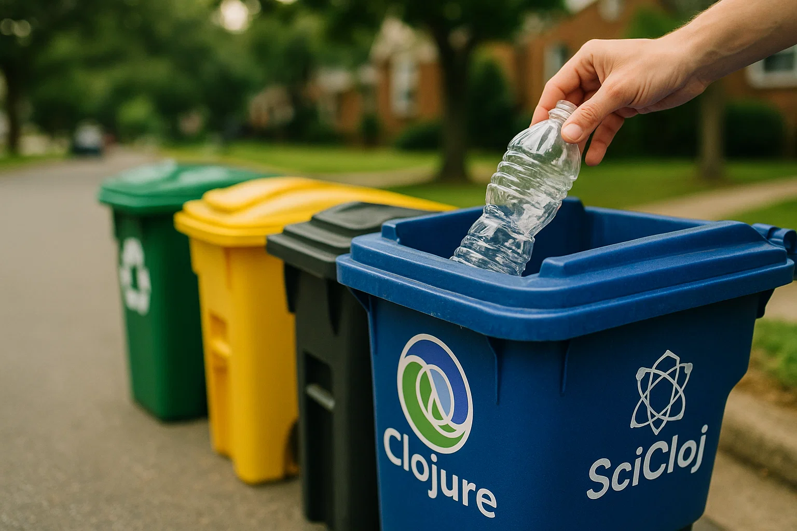

What’s the Buzz in Charlotte? A Pre-Conj Data Dive
This November 12th, Clojure enthusiasts will gather in Charlotte, North Carolina for Clojure/conj 2025. For many of us, it’s a cherished yearly tradition of code, conversations, and that special “this is my people” feeling.
Fun fact: during the Revolutionary War, a British general called Charlotte a “hornet’s nest of rebellion” for its fierce resistance. That same spirit of passionate engagement seems to live on in the city’s civic life today, on display using the hornet as their city emblem.
In the spirit of exploration that defines our community, let’s get to know our host city before we even arrive. What can 3 million service requests tell us about the heart of Charlotte?
A Glimpse into Charlotte’s Data
Let’s find out by diving into the city’s 311 system, which captures the pulse of city life through non-emergency service requests. Every pothole report, noise complaint, and fallen tree notification tells a story.
Downloaded from Charlotte Service Requests.
(defonce Charlotte-311
(tc/dataset (fs/file (fs/home) "Downloads" "Service_Requests_311.csv")
{:key-fn csk/->kebab-case-keyword}))Let’s see what columns we have
(tc/column-names Charlotte-311)(:x
:y
:objectid
:department
:division
:request-no
:fiscal-year
:fiscal-month
:request-type
:received-date
:internal-field-observation
:title
:cmpd-division
:neighborhood-profile-area
:block-no
:street-direction
:street-name
:street-type
:city
:state
:zip-code
:full-address
:x-coord
:y-coord
:latitude
:longitude
:council-district
:global-id
:pid)I wonder what the request types are
(tc/group-by Charlotte-311 :request-type)_unnamed [175 3]:
| :name | :group-id | :data |
|---|---|---|
| MISSED RECYCLING | 0 | Group: MISSED RECYCLING [56694 29]: |
| CDOT STREET SIGN REP/REPL | 1 | Group: CDOT STREET SIGN REP/REPL [14259 29]: |
| STREET SWEEPING/FLUSHING | 2 | Group: STREET SWEEPING/FLUSHING [10876 29]: |
| NON_RECYCLABLE ITEMS | 3 | Group: NON_RECYCLABLE ITEMS [1542623 29]: |
| HNS HEALTH AND SANITATION | 4 | Group: HNS HEALTH AND SANITATION [147023 29]: |
| CART REPAIR-GARBAGE | 5 | Group: CART REPAIR-GARBAGE [69893 29]: |
| RECYCLABLE ITEMS | 6 | Group: RECYCLABLE ITEMS [366433 29]: |
| SW DOCUMENT RECYCLING | 7 | Group: SW DOCUMENT RECYCLING [32594 29]: |
| PARKING ON LAWN OFFHOURS | 8 | Group: PARKING ON LAWN OFFHOURS [6019 29]: |
| CDOT SIGHT OBSTRUCTION | 9 | Group: CDOT SIGHT OBSTRUCTION [4055 29]: |
| … | … | … |
| NEW SVC BUSINESS GARBAGE | 164 | Group: NEW SVC BUSINESS GARBAGE [225 29]: |
| CURBIT PICKUP DAY INQUIRY | 165 | Group: CURBIT PICKUP DAY INQUIRY [39 29]: |
| ROW OBSTRUCT OTHER | 166 | Group: ROW OBSTRUCT OTHER [1630 29]: |
| SWS MLTFMLY SITE INVSTGT | 167 | Group: SWS MLTFMLY SITE INVSTGT [5 29]: |
| ILLEGAL PARKING | 168 | Group: ILLEGAL PARKING [1211 29]: |
| ZON DUPLEX/DUPLEXES | 169 | Group: ZON DUPLEX/DUPLEXES [68 29]: |
| SUBDIVISIONS | 170 | Group: SUBDIVISIONS [29 29]: |
| UT/WATER QUALITY TESTING | 171 | Group: UT/WATER QUALITY TESTING [1 29]: |
| CART PURCHASE | 172 | Group: CART PURCHASE [8 29]: |
| HOMELESS SUPPORT OUTREACH | 173 | Group: HOMELESS SUPPORT OUTREACH [929 29]: |
| HNS ESCALATED REQUESTS | 174 | Group: HNS ESCALATED REQUESTS [82 29]: |
Let’s see what are the most common requests
(def frequent-requests
(-> Charlotte-311
(tc/group-by :request-type)
(tc/aggregate {:frequency tc/row-count})
(tc/order-by :frequency :desc)))frequent-requests_unnamed [175 2]:
| :$group-name | :frequency |
|---|---|
| NON_RECYCLABLE ITEMS | 1542623 |
| RECYCLABLE ITEMS | 366433 |
| HNS HEALTH AND SANITATION | 147023 |
| CART REPAIR-GARBAGE | 69893 |
| MISSED RECYCLING | 56694 |
| 311 DOCUMENT | 52972 |
| SW DOCUMENT GARBAGE | 46761 |
| SW DOCUMENT RECYCLING | 32594 |
| DEAD ANIMAL COLLECTION | 30048 |
| SW DOCUMENT YARD WASTE | 26465 |
| … | … |
| COVID 19-PRICE GOUGING | 4 |
| SW EXCESSIVE STORM-SW USE | 2 |
| SW REMINDER BULKY-SW USE | 2 |
| SWS MLTFMLY FIELD OBSERVE | 2 |
| ON CALL - SWS SPEC SERV | 1 |
| COMPLEX PROBLEM | 1 |
| UT/LANDSCAPE | 1 |
| DISABILITY ACT | 1 |
| UT/MANDATORY | 1 |
| BUS STOP-REMOVE TRASH CAN | 1 |
| UT/WATER QUALITY TESTING | 1 |
The most frequent request type is about non-recyclable items. It suggests Charlotte residents care about recycling but might need clearer guidelines about what can be recycled. The high volume of requests also shows that people feel comfortable asking the city for guidance. Data like this helps cities improve their communication and services.
(-> frequent-requests
(plotly/base {:=title "Charlotte 311 Service Requests"})
(plotly/layer-bar {:=x-title "Request Type"
:=y :frequency
:=y-title "Count"}))That’s a long tail you have there. Let’s focus on the top 5.
(-> frequent-requests
(tc/select-rows (range 5))
(plotly/base {:=title "Charlotte 311 Service Requests"})
(plotly/layer-bar {:=x :$group-name
:=x-title "Request Type"
:=y :frequency
:=y-title "Count"}))This brief analysis gives us a snapshot of daily life in Charlotte, revealing a community that’s actively engaged in civic life and recycling. It’s a perfect backdrop for the kind of thoughtful problem-solving we cherish in the Clojure community.

Join Us at the Workshop
This journey from a raw CSV file to a clear visualization is exactly what our Empowering Data Analysis through SciCloj workshop is all about. Led by me, Ethan Miller, you’ll start your Conj experience by diving into practical, hands-on data analysis and come away with new ideas to carry back home.
You will learn how to:
- Load and explore real-world datasets
- Create clear, reproducible analyses
- Share your insights through interactive notebooks
- Leverage Clojure’s immutable data structures for data science
We can’t wait to explore data with you. See you in Charlotte!